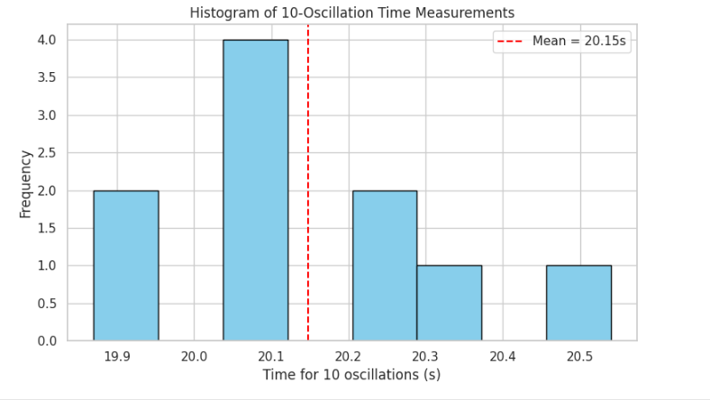

Problem 1
Measuring Earth's Gravitational Acceleration Using a Pendulum
Motivation:
The acceleration due to gravity ($ g $) is a fundamental constant that influences a wide range of physical phenomena. Measuring $ g $ accurately is crucial for understanding gravitational fields, conducting experiments in various fields, and analyzing local gravitational variations.
This problem involves measuring $ g $ using the oscillations of a simple pendulum, where the period of oscillation depends on the local gravitational field. The exercise emphasizes rigorous measurement practices, uncertainty analysis, and their role in experimental physics.
Task:
Measure the acceleration due to gravity ($ g $) using a pendulum and analyze the uncertainties in the measurements.
Materials:
- A string (1 or 2 meters long)
- A small, dense object (e.g., a metal ball)
- Stopwatch
- Ruler or measuring tape
- Support stand (to suspend the pendulum)
Procedure:
- Setup the Pendulum:
- Attach the string to the support stand and suspend the small object to create a pendulum.
-
Ensure the pendulum can swing freely without obstruction.
-
Adjust the Length:
-
Measure and record the length $ L $ of the pendulum (from the pivot point to the center of mass of the object).
-
Measure the Period:
- Displace the pendulum slightly (less than $ 10^\circ $) from its equilibrium position and release it.
- Use the stopwatch to measure the time for 10 complete oscillations.
-
Repeat this measurement at least three times to ensure accuracy.
-
Calculate the Period:
-
Compute the average time for 10 oscillations and divide by 10 to find the period $ T $.
-
Repeat for Different Lengths:
- Change the length of the pendulum and repeat the measurements for at least three different lengths.
Theoretical Foundation:
The period $ T $ of a simple pendulum for small angular displacements is given by:
Rearranging for $ g $, we get:
Where: - $ L $ is the length of the pendulum, - $ T $ is the period of oscillation, - $ g $ is the gravitational acceleration.
Python Code Implementation:
 Below is the Python code to calculate $ g $ based on measured data and visualize the results.
```python import numpy as np import matplotlib.pyplot as plt
Function to calculate g from pendulum data
def calculate_gravity(lengths, periods): """ Calculate gravitational acceleration g using the formula: g = 4 * pi^2 * L / T^2 """ g_values = [] for L, T in zip(lengths, periods): g = (4 * np.pi2 * L) / T2 g_values.append(g) return g_values
Example data: lengths (in meters) and periods (in seconds)
lengths = [1.0, 1.5, 2.0] # Replace with your measured lengths periods = [2.01, 2.46, 2.84] # Replace with your measured periods
Calculate g for each length
g_values = calculate_gravity(lengths, periods)
Print results
print("Gravitational Acceleration (g) Values:") for i, g in enumerate(g_values): print(f"Length {lengths[i]} m: g = {g:.3f} m/s^2")
Average g value
average_g = np.mean(g_values) print(f"\nAverage Gravitational Acceleration (g): {average_g:.3f} m/s^2")
Plotting
plt.figure(figsize=(8, 6)) plt.plot(lengths, g_values, marker='o', linestyle='-', color='blue') plt.axhline(y=9.81, color='red', linestyle='--', label='Standard g = 9.81 m/s²') plt.title('Measured Gravitational Acceleration vs. Pendulum Length') plt.xlabel('Pendulum Length (m)') plt.ylabel('Gravitational Acceleration (m/s²)') plt.legend() plt.grid(True) plt.show()